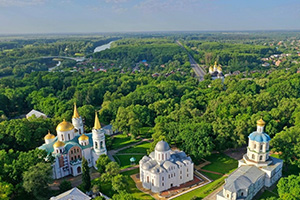
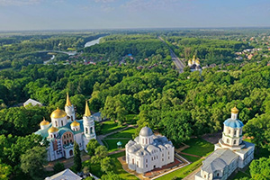
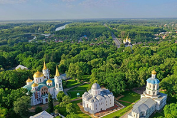

Українські незламні міста – розстріляні, зруйновані, але нескорені – стали справжніми форпостами духу. Їхні героїчні захисники, їхні стійкі духом мешканці вписали в історію нашої країни сторінки, якими будуть захоплюватися нащадки.
